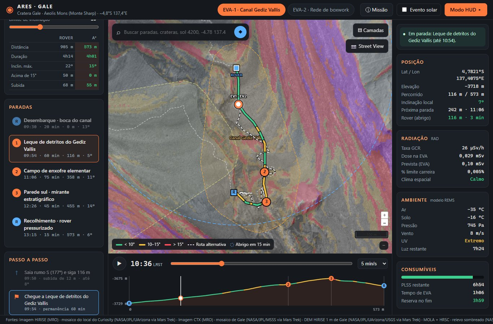
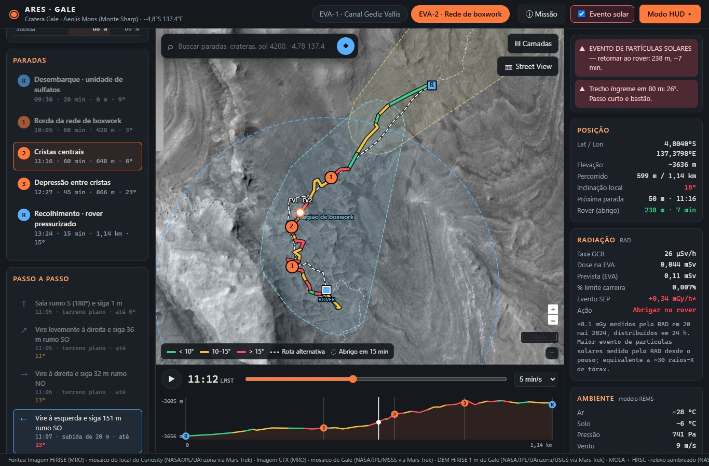
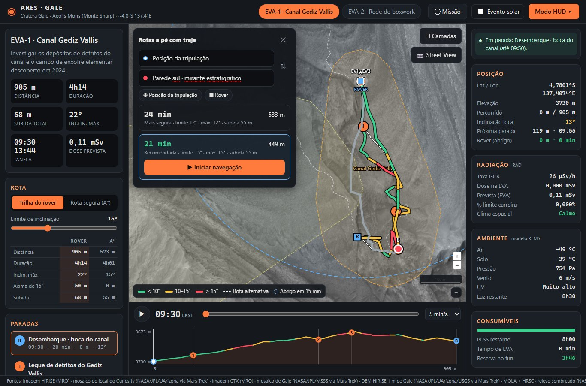
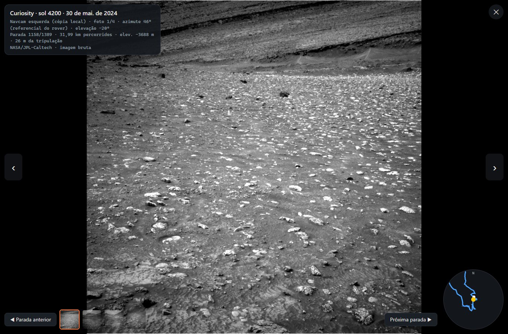
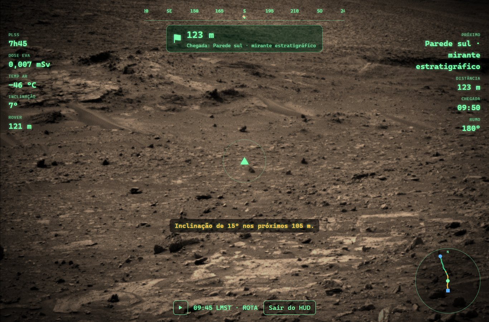

O mapa de campo para os primeiros humanos em Marte: planejar e executar caminhadas (EVAs) seguras no Monte Sharp, num tablet e no visor do capacete.
App ao vivo: d3vrya.github.io/Hackathon
Local: cratera Gale, exatamente por onde o Curiosity passou em 2024–2025: o enxofre elementar e as cristas de boxwork.
Dados de várias missões da NASA numa só tela:

Sobre o DEM HiRISE de 1 m de Gale (grade de 4 m), com a velocidade de caminhada com traje (Tobler).


3 rotas a pé: mais segura (≤ 12°), recomendada (≤ 15°) e mais rápida (≤ 20°). Busca por 1.783 nomes da IAU, sol ou coordenadas.

Fotos reais da Navcam do Curiosity em qualquer um dos 1.389 pontos do trajeto (2012–2026).
